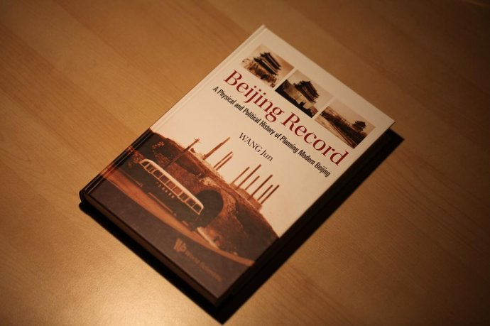

Beijing Record

In the early days of the establishment of the People’s Republic of China, Liang Sicheng and Chen Zhanxiang proposed the “Liang-Chen Plan.” This plan proposed building a new administrative center in the western suburbs of Beijing, while fully preserving the old city, and dividing the city into several functional areas to form a “Greater Beijing.” Despite their efforts, their proposal was not implemented. Later, Liang Sicheng suggested transforming the old city walls into a 39.75-kilometer-long three-dimensional park, where people could enjoy the scenery and views of the Western Hills and the Forbidden City palace. Unfortunately, this proposal also failed to gain approval.
Today, more than 60 years later, the city of Beijing has expanded to its seventh ring road, facing problems such as haze and traffic congestion. As a result, city planning is underway, and a new “sub-center” is being proposed in Baoding and other locations, reminiscent of the original “Liang-Chen Plan.”
A century ago, Paris was grappling with an urban crisis similar to that of Beijing today, with a rapidly expanding population, a raging epidemic, and substandard living conditions such as communal toilets serving 70 households and access to clean water being a luxury. In response to this dire situation, Le Corbusier devised a plan for the “City of Tomorrow” which involved razing half of central Paris and replacing it with 18 sixty-story buildings. However, this proposal was met with great resistance from Parisians and ultimately disregarded. Although Le Corbusier’s idea was well-intentioned, it failed to take into account the importance of considering human nature in addition to practicality in architectural design.
What is a city? Historically, cities were referred to as city-states, which were established through a mutual agreement between its citizens, much like the formation of a state. As commerce grew, so did the city, expanding in size, functions, and meaning. Nevertheless, the fundamental purpose of a city remains unchanged – to serve its citizens, to provide them with a sense of well-being and a dignified way of life.
However, this is not the case for Beijing, which carries an abundance of political functions as the capital. Initially, its leaders did not intend for Beijing to become a city solely centered around politics like Washington, D.C. Yet, the “Liang-Chen Plan” for the development of “Greater Beijing” was never realized and the city was not only left in a state of disrepair but also had its thousand-year-old culture and heritage destroyed. Unfortunately, the city’s planning was monocentric, spreading out from one point to the next in a circular manner, resulting in an unequal distribution of resources. The city’s core purpose, to serve its citizens, has been overshadowed by its role in serving the government.
In his book, Wang Jun reflects on the past decade’s rights and wrongs with a melancholic tone. However, instead of expressing his opinions on what is right or wrong, the author presents an objective view of the situation, utilizing hundreds of photographs and pictures, interviews, and archival materials to depict how Beijing was gradually stripped of its essence.
I came across a quote by Liang Sicheng a long time ago that said: “To peel off a layer of the wall is like peeling off a layer of skin from my body; to tear off a brick is like digging up a piece of flesh from my body.” At first, I could only understand it in a vague way. However, after visiting the magnificent Yingxian Wooden Pagoda in Shanxi, one of the oldest surviving ancient buildings in China, and witnessing its slow destruction by tourists, I came to truly comprehend the pain that Liang Sicheng felt. Watching the demolition of Beijing in the book was like being a witness to the gradual stripping away of the city, carried out by professionals for various objective reasons. It felt as though Liang Sicheng was Don Quixote making a final attempt, but seeing his efforts turn to dust, little by little, was a heart-wrenching experience.
The demolition of cities is a tragedy, especially in the case of unique cities like Beijing, which has suffered the destruction of dozens of its cities and the loss of its cultural and traditional heritage. The reasons behind this destruction, driven by substantial economic interests and political powers, are often ignored and carried out beyond the law. This begs the question of who holds this power and why our laws are unable to stand against it. It requires a deeper examination of the institutional level.
While watching the movie “Tokyo Trial,” I was struck by its release as a film instead of a documentary. Despite the director’s attempts at presenting the events objectively, the film was permeated by a sense of revenge. Trials are supposed to be based on facts and the law, but this movie unconsciously skips over the evidence and focuses on the end result as a means of expressing justice and victory through revenge. This approach is not unique to this movie, but it highlights a long-standing trend in Chinese history where evidence is not preserved as part of the nation’s true history.
This pattern is not limited to China, but is a common human problem, as seen in “1993,” “Animal Farm,” and “Once Upon a Time in Imperial Politics.” We often have a fatal conceit about ourselves, fueled by passion and desire, but these are often exploited by others. The exploitation of people’s rights becomes a temptation each time.
In the same way that millions of citizens tore down the walls to scare the sparrows or that Hitler sent millions of German nationals to war, the demolition of monuments and lack of planning in Chinese cities results in everyday life continuing as usual. The words of Martin Niemoller inscribed on the Jewish Massacre Memorial in Boston, USA serve as a reminder of the importance of standing up for others, even when they are not directly affected: “In Germany, at first they went after the communists, and I didn’t say anything - because I wasn’t a communist; then they went after the Jews, and I didn’t say anything - because I wasn’t a Jew; then they went after the trade unionists, and I didn’t say anything - because I wasn’t a Jew. Then they went after the trade unionists, and I did not speak up - because I was not a trade unionist; after that, they went after the Catholics, and I did not speak up because I was a Protestant; and finally, they came after me. But no one ever stood up for me again.”
I recall a crisp autumn morning when two of my closest friends and I climbed Jingshan Hill, situated in the heart of Beijing’s historic district. The hill features rhythmic courtyards with a unique aesthetic, composed of a mix of green bricks and gray tiles arranged in a staggered pattern. The city’s straight north-south axis, running through landmarks such as Zhengyang Gate, Tiananmen Square, the Forbidden City, the Drum Tower, and the Bell Tower, creates an imposing and majestic visual contrast with the tranquil surrounding courtyards. The distant skyline of various buildings of different heights, standing in front of such a magnificent masterpiece of the city, was a feast for the eyes. I was captivated and couldn’t bring myself to look away. I quickly led my friends to the spot where Chongzhen, the last emperor of the Ming dynasty, is said to have hanged himself from an old tree.